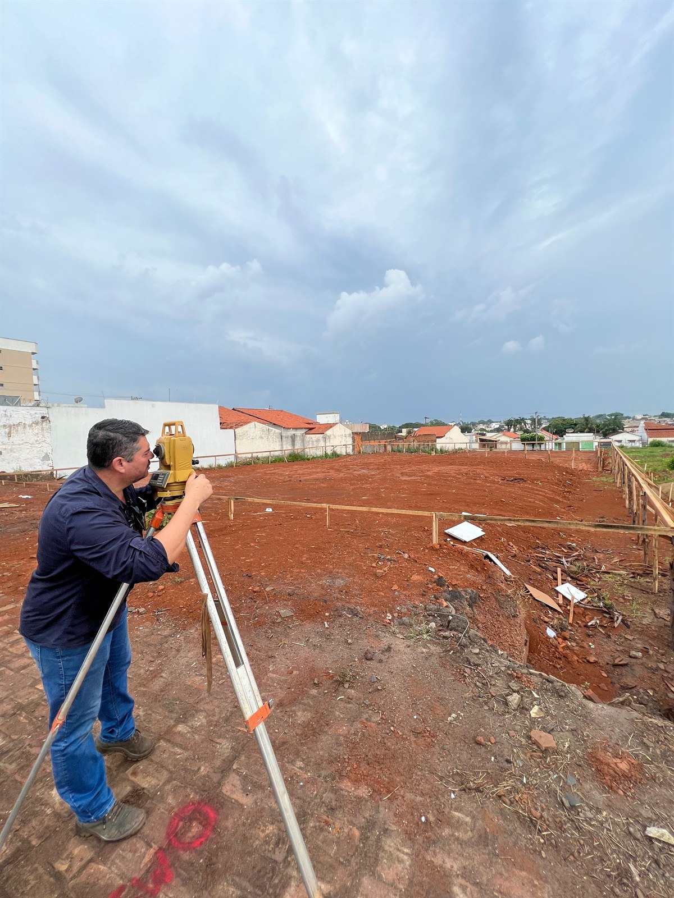
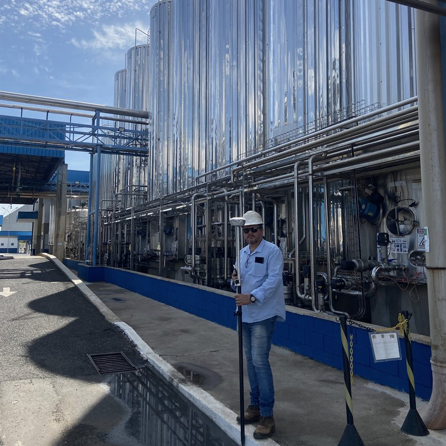
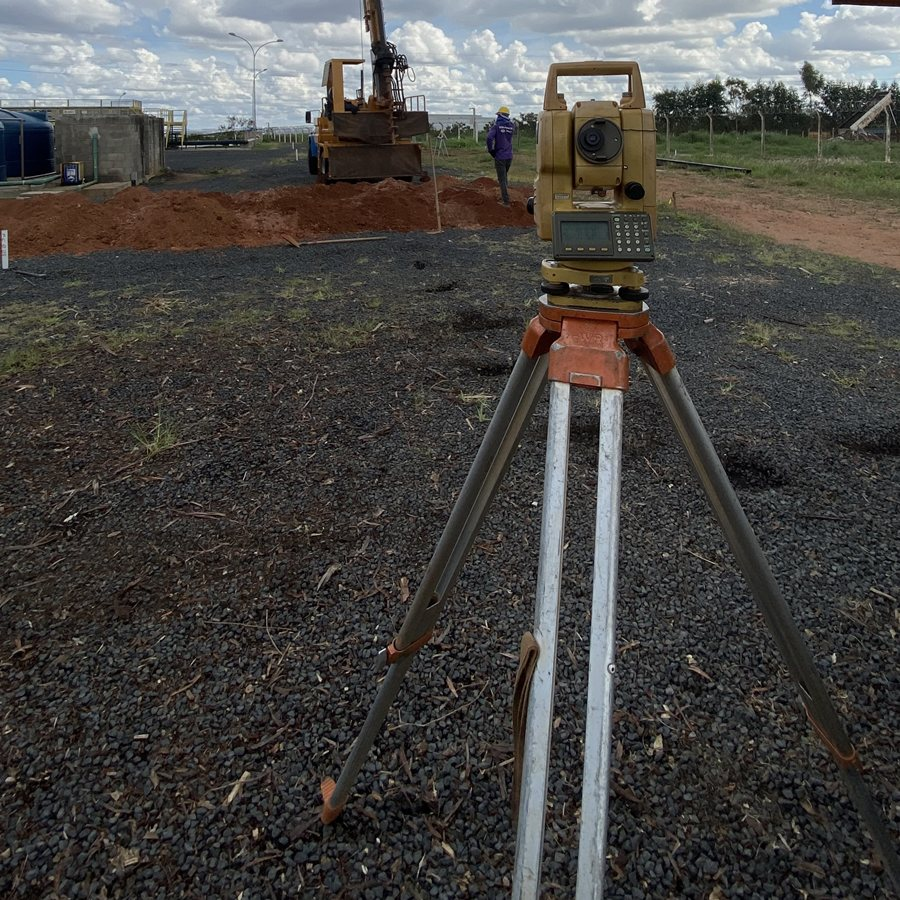

Levantamentos planialtimétricos
Medição de relevo, curvas de nível e edificações para projeto, execução ou perícia.
Do campo ao registro: levantamentos topográficos, georreferenciamento SIGEF/INCRA e controle de obras com rigor técnico e prazo cumprido.
Seis frentes de trabalho — do meio rural à infraestrutura urbana.
Medição de relevo, curvas de nível e edificações para projeto, execução ou perícia.
Demarcação e certificação de imóveis rurais junto ao INCRA.
Correção de área, retificação de matrícula e regularização fundiária levadas ao cartório.
Projetos de loteamento e desmembramento do solo prontos para aprovação municipal.
Locação de obra, controle de eixos e níveis, monitoramento de recalques e as-built.
Modelagem de terreno, greides e volumes de corte/aterro com pranchas técnicas.
Uma equipe que domina a medição e a burocracia — e entrega as duas resolvidas.



GNSS RTK e estação total — dados que o SIGEF e o cartório aceitam de primeira.
Etapas e datas definidas no início e respeitadas do começo ao fim, sem surpresas.
Responsável técnico e ART, em conformidade com INCRA, cartórios e prefeituras.
Sede em Uberlândia e equipes em deslocamento para qualquer estado — da fazenda ao grande empreendimento urbano.